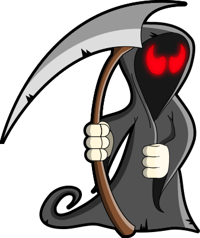

EST. 1978 ✦ YOUR PERSONAL PICTURE HOUSE
Everyone has a
type of terror.
Let’s find yours. Twenty questions to uncover the classic
horror films made for your kind of Halloween night.
20 QUESTIONS~ 4 MINUTES3–5 PERFECTLY BAD DREAMS
ACT I — THE ATMOSPHERE01 / 05
GOOD TASTE. BAD DREAMS.
✦